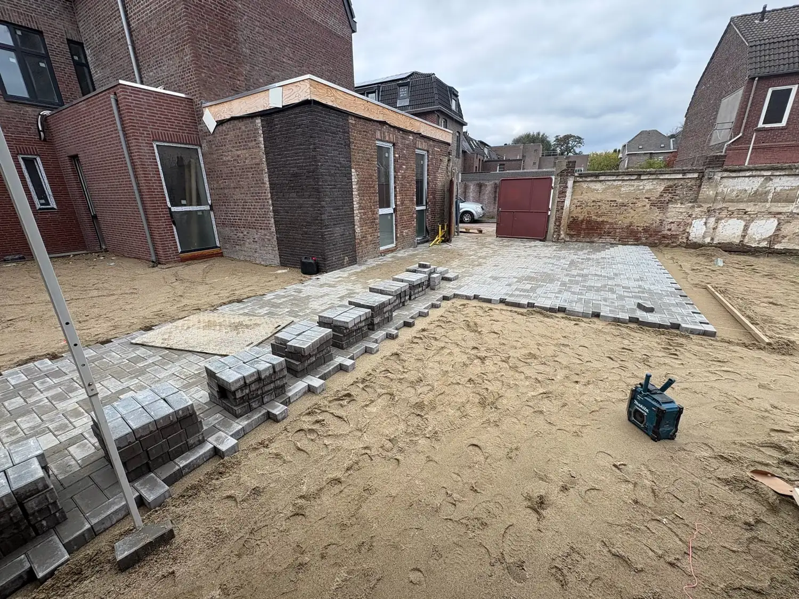

Voor elke oprit, of het nu om lichte of zwaardere voertuigen gaat, er is altijd een passende oplossing. Duurzaam gefundeerd en netjes afgewerkt.

Een goede oprit begint met een degelijke fundering. Tuinbazen zorgt dat jouw oprit stabiel ligt, water goed afvoert en er jaren mooi uitziet, zonder verzakking of onkruid. Of er nu een personenauto of een zwaardere bestelbus of camper op moet staan: wij stemmen de opbouw af op het gewicht dat de oprit moet dragen.
Van klassieke betonnen klinkers tot moderne grote tegels, wij adviseren je over de beste keuze voor jouw situatie en voeren het werk strak en netjes uit.
Vrijblijvend offerte aanvragenWij helpen je in al deze situaties, groot of klein, nieuw of vervanging.
Je oprit is verzakt, versleten of niet meer representatief.
Losse of ongelijke tegels vormen een struikelgevaar en zien er slecht uit.
Je wil een volledig nieuwe oprit laten aanleggen bij een nieuwe woning of tuin.
Je wil extra parkeerplek of een verharding die geschikt is voor zwaarder gebruik.
Van eerste meting tot nette oplevering, wij houden je bij elke stap op de hoogte.
We meten op, bespreken opties en kiezen het juiste materiaal voor jouw situatie.
Een goede fundering met steenslag is bepalend voor de levensduur, afgestemd op licht of zwaar gebruik.
We leggen de stenen waterpas, met het juiste afschot voor waterafvoer.
Afwerking met polymeervoegzand en een nette eindoplevering inclusief opruimen.
Een professioneel gefundeerde oprit gaat tientallen jaren mee zonder verzakking, ook onder zwaardere voertuigen.
We houden altijd rekening met afschot en waterdoorvoer, geen plassen.
Een mooie oprit geeft jouw woning direct meer uitstraling en waarde.
Vraag vandaag nog vrijblijvend een offerte aan. Wij reageren binnen één werkdag.
Offerte aanvragen →